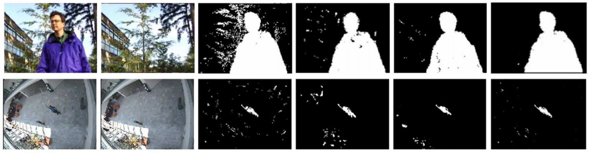
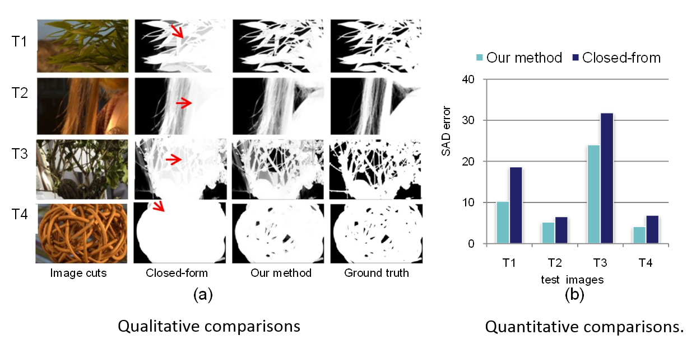
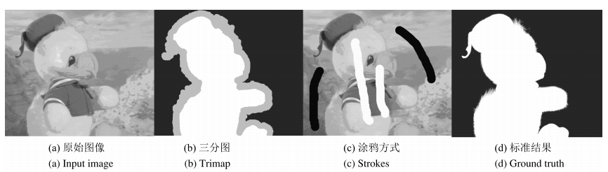
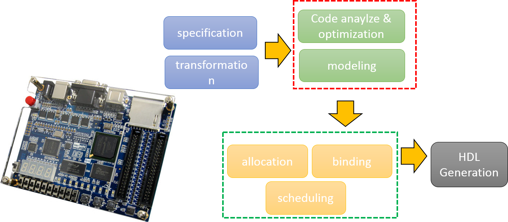

 |
Visual search at alibaba
Yanhao Zhang, Pan Pan, Yun Zheng, Kang Zhao, Xiaofeng Ren, Rong Jin
in Proceedings of the 24th ACM SIGKDD International Conference on Knowledge Discovery and Data Mining (KDD), 2018
|
 |
Dancelets mining for video recommendation based on dance styles
Tingting Han, Hongxun Yao, Chenliang Xu, Xiaoshuai Sun, Yanhao Zhang, Jason J. Corso
in IEEE Transactions on Multimedia, 2016
|
 |
Exploring coherent motion patterns via structured trajectory learning for crowd mood modeling
Yanhao Zhang, Lei Qin, Rongrong Ji, Sicheng Zhao, Qingming Huang, Jiebo Luo
in IEEE Transactions on Circuits and Systems for Video Technology, 2016
|
 |
Strategy for dynamic 3D depth data matching towards robust action retrieval
Sicheng Zhao, Lujun Chen, Hongxun Yao, Yanhao Zhang, Xiaoshuai Sun
in Neurocomputing, 2015
|


Journal/Conference Reviewer
IEEE Transactions on Circuits and Systems for Video Technology (TCSVT)
IEEE Transactions on Multimedia (TMM)